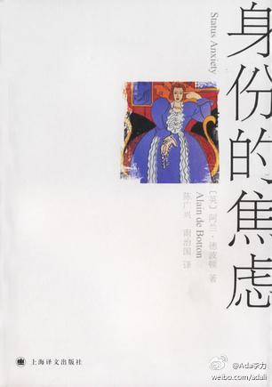

管制是为了当权者更好地抢占社会资源，跟市民有毛关系?//@袁莉wsj:让市民方便的出租车管得一塌糊涂，让市民不方便的各种管制管得一丝不苟。//@谢文: //@斯伟江: 转发微博@万象皆宾客:从朝阳公园表姐家去机场，结果订车电话订不到车，凛冽的寒风中更打不到车，迎接十八大黑车也没有了踪影。眼看得接受误机的现实了，一辆越野车停在了身边，问清情况后说我去不了机场，但可以把你带到地铁站你去坐快轨。上车后司机说“破北京，管得这么差，只能老百姓自个儿帮自个儿了。”快轨上感慨中。
转转更热闹。//@KT胡运旺:无论是参加了讲座沙龙活动，还是随意来坐坐偶遇了有芯人，都可能收获了或知识或信息或人脉。知识有价否？信息有价否？IC产业链人脉有价否？@IC咖啡胡运旺:创业咖啡大多有政府支持,如场地或资金(有的近百万),因促进创业符合政策且善于与政府沟通.IC咖啡重点是技术交流,信息分享,产业上下游互动,促进创业非重点,俺又不善交际,目前还没啥大温暖.在此请在@IC咖啡 获得或希望以后获得知识,信息及人脉等的朋友多支持,无论点杯咖啡或顺手转下微博,不胜感谢!
在读《身份的焦虑》 ★★★ “这本书的大体意思在阿兰•德波顿的#TED#的演讲中已有体现。不过读书更能体会那种英式幽默。阿兰把自己定位为随笔作家，写这本书是期望有助于更好理解我们人类的处境。” 网页链接 